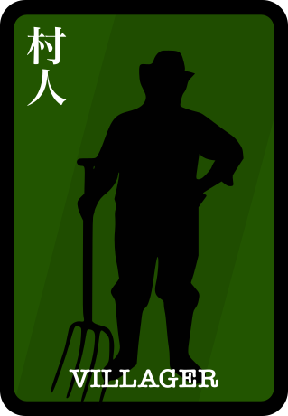
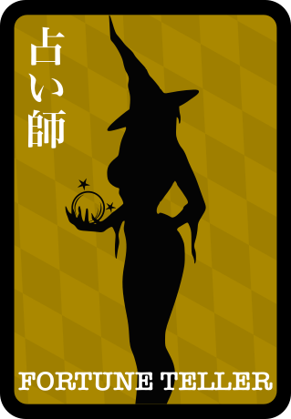
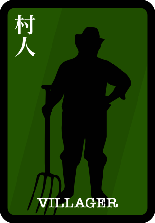
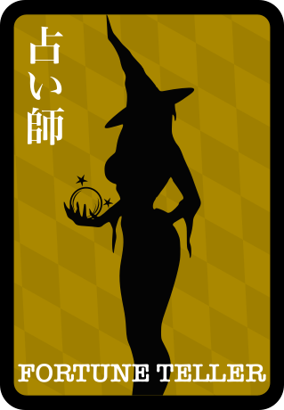

ルール
基本的に公式のワンナイト人狼のルールに全て従う形となっています。
3人-8人で遊べて10-15分程度でワンゲームが終わるような仕組みにしています。
使い方
- とりあえずメンバーが3人以上いる部屋を用意します。
- 部屋に「gamemaster」を招待します。
- メンバーの誰かが「/jinro start」を入力してください。
- あとは指示に従えばできるはずです。
大体の流れ
- 誰かが「/jinro start」を入力後エラーが出ますが、30秒以内にwelcomeメッセージが流れます
- 全員の人数+2枚のカードが用意され、ランダムでカードが配られます
- 占い師のターンです。（誰かのカード1枚か場の2枚どちか？を見ることができます。）プレイヤーに占い師がいなくてもCPUがいるように振る舞います
- 人狼同士に誰が人狼であるかDMが届きます。(1人の時はその人だけ)また、人狼がプレイヤーにいなくてもこのメッセージは流れます
- 怪盗のターンです。(誰か1人と手札を交換することができますが、相手にはそれが分かりません。人狼になる可能性もありますし、交換しない選択肢もあります)もちろん怪盗がいなくてもCPUがいるように振る舞います
- ここから話し合いの場になります。約束事として「自分が人狼である」と名乗ることはできません。次の投票で人狼になる人に一番集まるように、もしくは人狼の人は人狼以外の人が投票されるように頑張ってください
- GMから投票の指示がでます。コマンドに従って行ってください
- あとはGMが結果を知らせてれます
よくある質問
- 最初のstartコマンドがtimeoutします
-
slackは2秒間レスがないとtimeoutになるんですが、裏がspreadsheetなので処理が遅くて2秒以上かかる時があるのでそうなります。
特に新規で始める時 - 配られるカードの種類を教えてください。
- 次の4種類のどれかが配られます。詳しくは公式を見てください。
 




- カードの枚数を教えてください。
- 人狼2枚、占い師1枚、怪盗1枚は固定で村人が可変しますが、必ずしもプレイヤーに来るとは限りません。 詳しくは公式を見てください。
- え？誰も人狼がいない時とかあるんですか？
- ありえます。場のカード2枚が人狼の時です。詳しくは公式を見てください。
- え？プレイヤーの中に占い師がいないことがあるんですか？
- ありえます。場のカード2枚のうち1枚が占い師の時です。詳しくは公式を見てください。
- え？プレイヤーの中に怪盗がいないことがあるんですか？
- ありえます。場のカード2枚のうち1枚が怪盗の時です。詳しくは公式を見てください。
- え？でもslackに「占い師」のターンとか出るんですけど？
- はい、占い師に限らず、怪盗や人狼がいてもいなくてもターンが存在するようにCPU的な動きをさせています。（待ち時間は一定ではありません）じゃないとゲームとして成立しないので…
- 占いコマンドや怪盗のコマンドの後、すぐにグループチャンネルに反映されないんですけど？
- はい、わざと遅れて表示するようにしています。行動パターンを読まれないようにするのが人狼の基本です。ちなみに遅れる秒数はランダムなので推定できません。
- 場の2枚が人狼で、実際のプレイヤーの中に誰も人狼がいない場合はどうするの？
- その場合は、それぞれプレイヤーが1票ずつ入るようにして「平和村」として成立させてください。
- スタートするとエラーメッセージ「operation_timeout」が出ます
- サーバレスでやってるのでGoogleさんの反応速度によっては、エラーが出る時があります。
30秒待ってもルームの方に音沙汰がない時は再度コマンドを打ってみてください - 占い師や怪盗の時にコマンドを打つと「operation_timeout」が出るんだけど？
- サーバレスでやってるのでGoogleさんの反応速度によっては、エラーが出る時があります。
30秒待ってもルームの方に音沙汰がない時は再度コマンドを打ってみてください - 占いをしたり、怪盗でカードを交換したのにすぐにチャンネルに反映されないんだけど？
- SlackのAPIの回数制限対応や、すぐにログが見えるとバレる可能性があるのでランダムで時間を置いて投稿するようになっています。
Tech
slackで無料で手軽に具現化する為に以下の技術を使っています。
- GASによるAPIサーバー
- GithubIOによる静的ページ（このサイト）と画像のホスティング